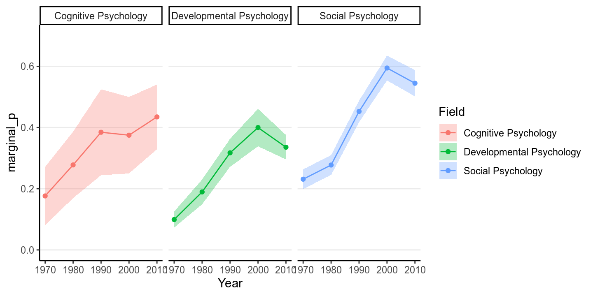
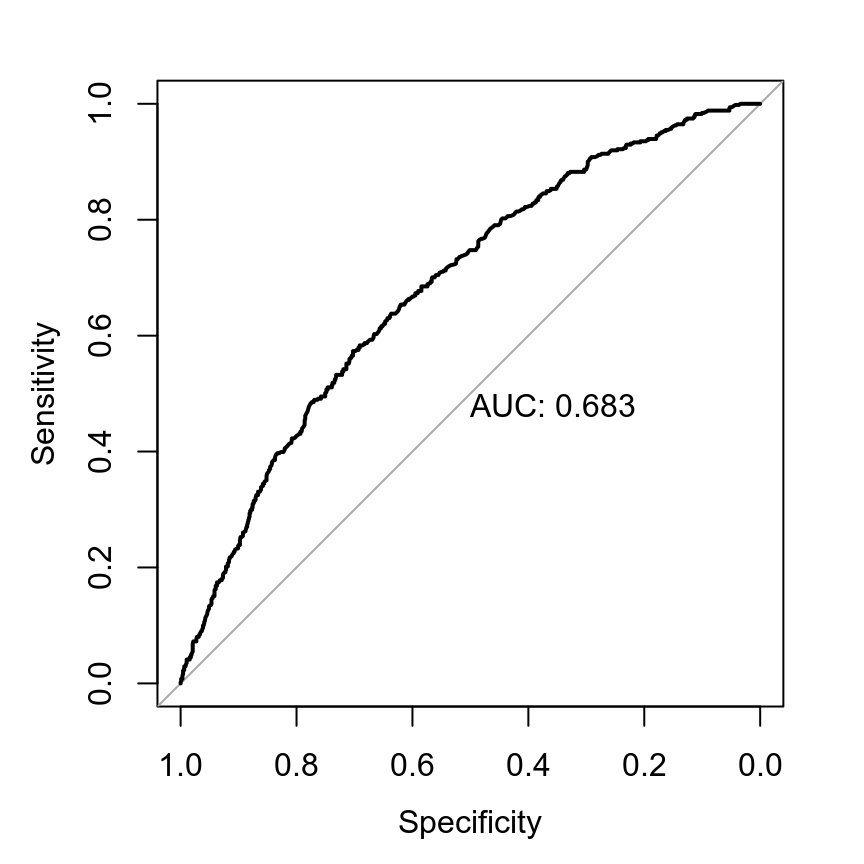
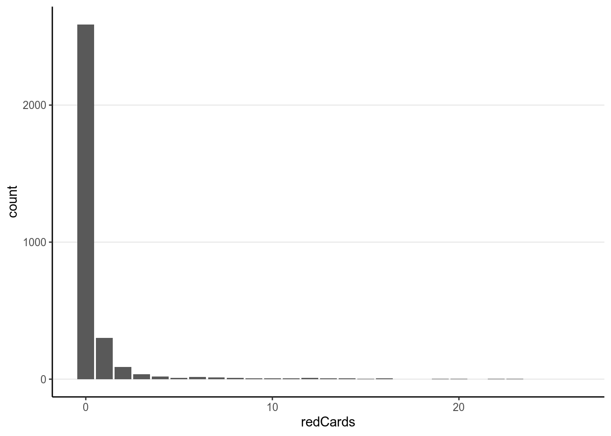
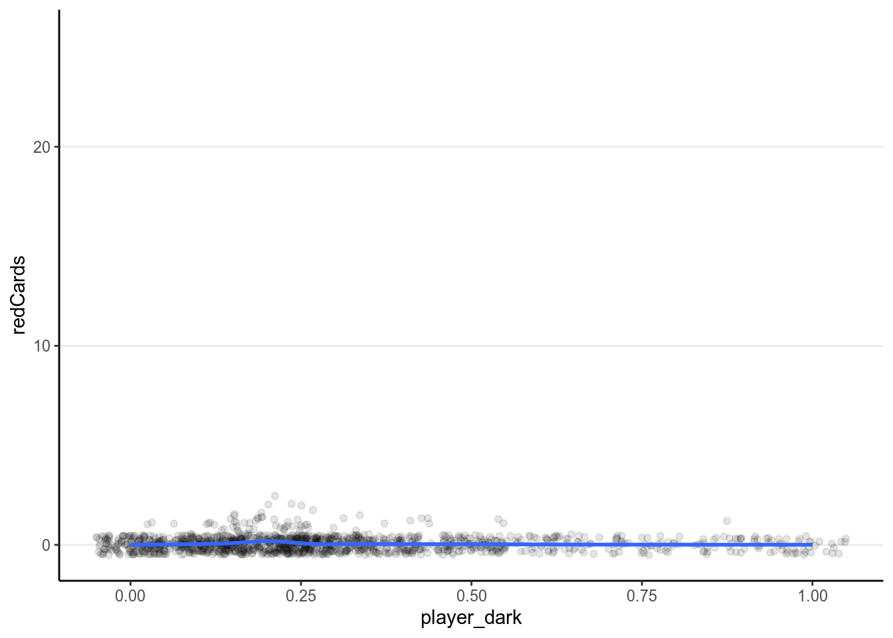
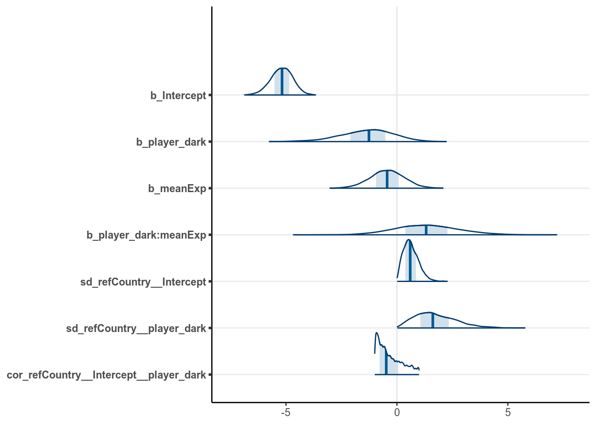
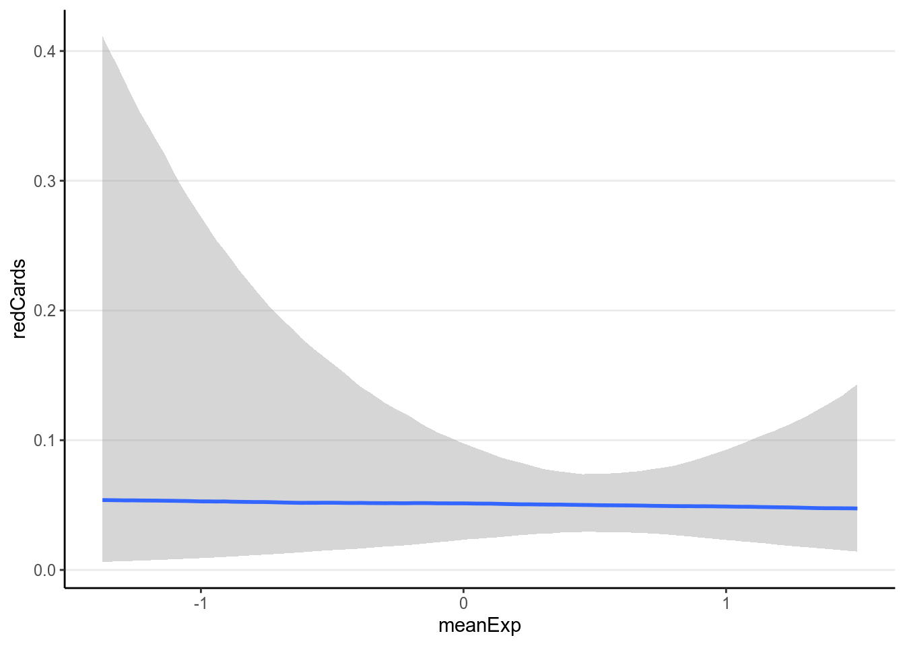
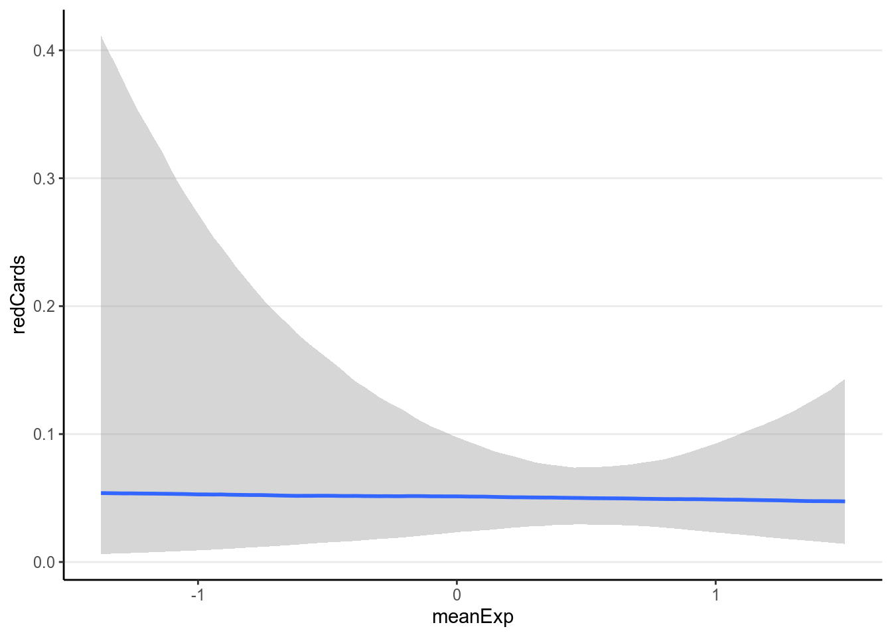

Chapter 11 Generalized Linear Models
GLM (generalized linear model) is a generalization of the linear model (e.g., multiple regression) we discussed a few weeks ago. Just to be careful, some scholars also use the abbreviation GLM to mean the general linear model, which is actually the same as the linear model we discussed and not the one we will discuss here. Here we discuss GLM (the generalized one) that is especially popular for modeling binary and count outcomes.
Like the linear model, the generalized linear model is concerned about the conditional mean of an outcome variable \(Y\); the conditional mean is usually denoted as \(\mu\). Indeed, the linear model we have discussed is a special case of GLM. To see what’s different in other GLMs, let’s apply the normal regression model to categorical outcomes, and see what problems there are.
We will use an example from Pritschet, Powell, and Horne (2016), which examines how common it was for researchers to report marginal \(p\) values (i.e., .05 < \(p\) \(\leq\) .10). The outcome is whether a study reported one or more marginal \(p\) values (1 = Yes, 0 = No). The researchers also categorized the studies into three subfields (Cognitive Psychology, Developmental Psychology, Social Psychology), and there were a total of 1,535 studies examined from 1970 to 2010.
Let’s read in the data and plot the proportions:
# readxl package can be used to import excel files
marginalp <- readxl::read_excel("../data/marginals psych science revision_corrections.xlsx")
# Recode `Field` into a factor
marginalp <- marginalp %>%
# Filter out studies without any experiments
filter(`Number of Experiments` >= 1) %>%
mutate(Field = factor(Field,
labels = c("Cognitive Psychology",
"Developmental Psychology",
"Social Psychology"))) %>%
# Rename the outcome
rename(marginal_p = `Marginals Yes/No`)
# Proportion of marginal p in each subfield across Years
marginalp %>%
ggplot(aes(x = Year, y = marginal_p)) +
stat_summary(aes(fill = Field), geom = "ribbon", alpha = 0.3) +
stat_summary(aes(col = Field), geom = "line") +
stat_summary(aes(col = Field), geom = "point") +
coord_cartesian(ylim = c(0, 0.7)) +
facet_wrap(~ Field)># No summary function supplied, defaulting to `mean_se()`
># No summary function supplied, defaulting to `mean_se()`
># No summary function supplied, defaulting to `mean_se()`
># No summary function supplied, defaulting to `mean_se()`
># No summary function supplied, defaulting to `mean_se()`
># No summary function supplied, defaulting to `mean_se()`
># No summary function supplied, defaulting to `mean_se()`
># No summary function supplied, defaulting to `mean_se()`
># No summary function supplied, defaulting to `mean_se()`
The error bar is pretty high for Cognitive Psychology, because only 5.922% of the articles in the data set were from that field.
We can first try a normal linear model to use Year to predict marginal_p.
First recode year into 0 to 4 so that every unit corresponds to 10 years, and
0 means 1970:
marginalp <- marginalp %>%
mutate(Year10 = (Year - 1970) / 10)
# Check the recode
distinct(marginalp, Year, Year10)># # A tibble: 5 x 2
># Year Year10
># <dbl> <dbl>
># 1 1980 1
># 2 1970 0
># 3 2000 3
># 4 1990 2
># 5 2010 4Now fit a normal linear model:
m1_norm <- brm(marginal_p ~ Year10,
data = marginalp,
prior = c(# for intercept
prior(normal(0, 1), class = "Intercept"),
# for slope
prior(normal(0, 1), class = "b"),
# for sigma
prior(student_t(4, 0, 1), class = "sigma")),
seed = 1340)Now let’s check the model. First a posterior predictive check:

(#fig:ppc_normal_hist)Posterior predictive graphical check with the normal regression model of Year predicting whether a marginal \(p\) value was reported.
Then the marginal model plot:
># `geom_smooth()` using formula 'y ~ x'
># `geom_smooth()` using formula 'y ~ x'
># `geom_smooth()` using formula 'y ~ x'
># `geom_smooth()` using formula 'y ~ x'(#fig:pi_m1)Marginal model plot of the normal regression model of Year predicting whether a marginal \(p\) value was reported.
There are two problems with a normal regression model for a binary outcome. First, clearly the outcome cannot be normally distributed as it can only take two values. Second, the predicted regression line is unbounded, meaning that it can go from \(-\infty\) to \(\infty\). It is probably not a problem for this example, as the fitted line is not too way off from the non-parametric smoother, and the predicted mean is still positive. However, it is easy to imagine situations where the predicted mean is smaller than 0 or greater than 1, which is clearly undesirable and leads to insensible predictions.
11.1 Basics of Generalized Linear Models
Now, consider how we can fix the two problems previously identified concerning fitting a normal regression model to a binary outcome. First, we want to allow for the possibility of conditional distributions other than normal for \(Y\). As you recall, for binary outcome we may consider the Bernoulli distribution. Second, we want to model \(\mu\) as a non-linear function of the predictors, as modeling \(\mu\) as a linear function of the predictors will imply that \(\mu\) can go from \(-\infty\) to \(\infty\), which does not work for categorical outcomes.
Note, however, even when the outcome can only take two values, 0 and 1, the mean across multiple observations can be a fraction. In a Bernoulli model, \(\mu\) is the probability of getting a “1”. Similar discrepancy (i.e., mean can be continuous even though the outcome is discrete) is also present in some other GLMs.
Under the GLM framework, we have models in the form \[\begin{align*} Y_i & \sim \mathrm{Dist}(\mu_i, \tau) \\ g(\mu_i) & = \eta_i \\ \eta_i & = \beta_0 + \beta_1 X_{1i} + \beta_2 X_{2i} + \ldots \end{align*}\] where one can choose distributions like Dist = Normal, Poisson, Binomial, Bernoulli, etc. Strictly speaking, GLM requires distributions that are in the exponential family, which will not include distributions like the \(t\) distribution. However, this is relatively minor detail as the exponential family is broad and subsumes most of the commonly used models. The distributions will have a mean parameter \(\mu_i\) and may have a dispersion parameter, \(\tau\).
An intermediate step in GLM is to transform \(\mu_i\) to \(\eta_i\). \(\eta_i\) is called the linear predictor, which is the linear function of the predictors. In linear models we directly models the conditional mean, \(\mu_i\) as the same as \(\eta_i\). However, to allow for the possibility of \(\mu_i\) being a non-linear function of the predictors, in GLM we transform \(\mu_i\) by applying a link function, \(g(\cdot)\), so that, even though we \(\eta_i\) to be linear in the coefficients, \(\mu_i = g^{-1}(\eta_i)\) will be a non-linear function of the coefficients as long as the link function is not linear. This step is needed to make sure that the predicted values will not be out of range.
11.2 Binary Logistic Regression
To make things more concrete, consider a binary logistic regression example for our example of predicting marginal \(p\) being reported using Year of publication. First, we need a model equation of the conditional mean of \(Y\), which will be \[\texttt{marginal_p}_i \sim \mathrm{Bernoulli}(\mu_i).\]
As you should know, the mean of a Bernoulli distribution is also the probability of a “success” (e.g., if one flips a coin 100 times, and gets 50 heads, the mean of the data is 50 / 100 = 0.5, which is also the probability of getting a head).
11.2.1 The logit link
With Year10 being the predictor, we have a linear equation \(\eta_i = \beta_0 + \beta_1 \texttt{Year10}_i\). Now, we will need to specify the link function to
map \(\mu_i\) to \(\eta_i\). There are many possible choices, but for binary
outcomes a common choice is the logit link, meaning \(\eta_i = g(\mu_i) = \operatorname{logit}(\mu_i) = \log [\mu_i / (1 - \mu_i)]\). The logit link convert
probabilities to log odds. You can see the logit link in the left figure below:
p1 <- ggplot(data.frame(x = c(0, 1)), aes(x)) +
stat_function(fun = qlogis, n = 501) +
xlab(expression(mu)) + ylab(expression(eta))
p2 <- ggplot(data.frame(x = c(-6, 6)), aes(x)) +
stat_function(fun = plogis, n = 501) +
ylab(expression(mu)) + xlab(expression(eta))
grid.arrange(p1, p2, nrow = 1)
(#fig:logit_link)(Left) Logit link of \(\eta = \operatorname{logit}(\mu)\); (Right) inverse logit link of \(\mu = \operatorname{logit}^{-1}(\eta)\).
For example, when \(\mu = .50\), \(\eta = 0\); when \(\mu = 0.9\), \(\eta = 2.197\). Therefore, even when the predicted value for \(\eta\) is very large or small, one can always ensure that \(\mu\) is between 0 and 1.
The right hand side shows the same relationship, but with \(\eta\) in the x-axis and \(\mu\) in the y-axis, so that we are plotting \(\mu_i = g^{-1}(\eta_i)\). \(g^{-1}(\cdot)\) is called the inverse link function. For a logit link, the inverse link function is called the standard logistic function, and thus the name logistic regression. The logistic function is defined as \[ \mu_i = g^{-1}(\eta_i) = \frac{\exp(\eta_i)}{1 + \exp(\eta_i)}. \] Generally, people either present the model using the link function or the inverse link function. For our example I can also write \[\begin{align*} \texttt{marginal_p}_i & \sim \mathrm{Bernoulli}(\mu_i) \\ \mu_i & = \mathrm{logistic}(\beta_0 + \beta_1 \texttt{Year10}_i). \end{align*}\]
11.2.2 Choice of Priors
There has been previous literature on what choices of prior on the \(\beta\) coefficients for logistic regressions would be appropriate (see Gelman et al. 2008). \(\beta\) coefficients in logistic regression can be relatively large, unlike in normal regression. Therefore, it’s pointed out that a heavy tail distribution, like Cauchy and \(t\), would be more appropriate. Recent discussions have settled on priors such as \(t\) distributions with a small degrees of freedom as a good balance between heavy tails and efficiency for MCMC sampling, so I will use \(t(4, 0, .875)\), where .875 is chosen to be the 1.25 divided by the standard deviation of the predictor, for the priors for logistic regression.
To run this model, we can specify the family argument in stan_glm:
m1_bern <- brm(marginal_p ~ Year10,
data = marginalp,
family = bernoulli(link = "logit"),
prior = prior(student_t(4, 0, .875), class = "b"),
# Note: no sigma
seed = 1340)
Note that in brms we used family = bernoulli(). In other R functions, such
as glm, they do not distinguish between bernoulli and Binomial and only
recognize family = binomial(), as a Bernoulli variable is a binomial variable
with \(n = 1\).
11.2.3 Interpreting the coefficients
Any non-linear relationships will involve more work in interpretations, and the coefficients in logistic regressions are no exceptions.
11.2.3.1 Intercept
From the equation, when all predictors are zero, we have
\[\operatorname{logit}(\mu_i) = \beta_0.\]
Therefore, the intercept is the log odds that a study reported a marginally
significant \(p\) value when Year10 = 0 (i.e, in 1970), which was estimated to
be -1.348 , 95% CI [-1.552, -1.150]. As log odds are not as
intuitive as probability, it is common to instead interpret \(\hat{\mu} = \operatorname{logistic}(\beta_0)\), which is the conditional probability of being marginal_p
= 1 in 1970. For Bayesian, that means obtaining the posterior distribution of
\(\operatorname{logistic}(\beta_0)\), which can be done by
draws_beta0 <- as.matrix(m1_bern, pars = "b_Intercept")
logistic_beta0 <- plogis(draws_beta0)
# Summarize the posterior distribution
psych::describe(logistic_beta0)># vars n mean sd median trimmed mad min max range skew kurtosis se
># X1 1 4000 0.21 0.02 0.21 0.21 0.02 0.15 0.27 0.12 0.13 0 0The bayesplot package allow you to plot transformed parameters quickly:
mcmc_areas(m1_bern, pars = "b_Intercept",
transformations = list("b_Intercept" = "plogis"), bw = "SJ")
A simpler but not precise method is to directly obtain an estimate of \(\operatorname{logistic}(\beta_0)\) as \(\operatorname{logistic}(-1.348) = 0.206\) by directly transforming the posterior mean and the credible interval of \(\beta_0\). This usually is okay for large sample sizes and probability close to 0.5, but can give big discrepancies otherwise. Generally I recommend directly obtaining the posterior distribution of \(\operatorname{logistic}(\beta_0)\) instead.
Below illustrates the discrepancy:
># 5% 95%
># 0.180 0.235# Transform the credible interval limits of beta0:
plogis(posterior_interval(m1_bern, pars = "Intercept"))># 2.5% 97.5%
># b_Intercept 0.175 0.2411.2.3.2 Interpreting \(\exp(\beta_1)\) As Odds Ratio
The slope, \(\beta_1\), represents the difference in the predicted log odds
between two observations with 1 unit difference in the predictor of interest,
while having matching values on all other predictors. For example, for
two individuals with 1 unit difference in Year10 (i.e., 10 years), we have
\[\operatorname{logit}(\mu_{\textrm{marginal_p} = 1}) -
\operatorname{logit}(\mu_{\textrm{marginal_p} = 0}) = \beta_1.\]
Again, difference in log odds are hard to interpret, and so we will exponentiate to get
\[\frac{\mathrm{odds}_{\textrm{marginal_p} = 1}} {\mathrm{odds}_{\textrm{marginal_p} = 0}} = \exp(\beta_1).\]
The fraction on the left hand side is the odds ratio of reporting a marginal
\(p\) value associated with a one unit difference in Year10 (i.e., 10 years). An
odds of 1.0 means that the probability of success and failure is equal; an odds
\(> 1\) means success is more likely than failures; and an odds \(< 1\) means
success is less likely than failures. Again, for Bayesian, we need to obtain the
posterior distribution of \(\exp(\beta_1)\) by
draws_beta1 <- as.matrix(m1_bern, pars = "b_Year10")
exp_beta1 <- exp(draws_beta1)
# Summarize the posterior distribution
psych::describe(exp_beta1)># vars n mean sd median trimmed mad min max range skew kurtosis se
># X1 1 4000 1.43 0.06 1.43 1.43 0.06 1.21 1.63 0.41 0.1 -0.03 0Using the posterior mean, we predict that the odds of reporting a marginal \(p\) value for a study that is 10 years later is multiplied by 1.428 times.
And we can again compute a 90% credible interval by:
># 5% 95%
># 1.34 1.53# Or you can exponentiate the credible interval of beta:
exp(posterior_interval(m1_bern, pars = "Year10"))># 2.5% 97.5%
># b_Year10 1.32 1.54Odds ratio (OR) is popular as the multiplicative effect is constant, thus making interpretations easier. Also, in medical research and some other research areas, OR can be an excellent approximation of the relative risk, which is the probability ratio of two groups, of some rare disease or events. However, odds and odds ratio are never intuitive metrics for people, and in many situations a large odds ratio may be misleading as it corresponds to a very small effect. Therefore, in general I would recommend you to interpret coefficients in probability unit, even though that means more work.
11.2.3.3 Interpreting Coefficients in Probability Units
Another way to interpret the results of logistic regression that requires more work but is more intuitive is to examine the change in probability. Because the predicted probability is a non-linear function of the predictors, a one unit difference in the predictor has different meanings depending on the values on \(X\) you chose for interpretations. Take a look on the predicted values based on our model below:
># `geom_smooth()` using formula 'y ~ x'
># `geom_smooth()` using formula 'y ~ x'
(#fig:pi_m1_bern)Marginal model plot of the binary logistic regression model of Year predicting whether a marginal \(p\) value was reported.
Now, consider the change in the predicted probability of reporting a marginal
\(p\) value with Year10 = 0 (1970) and Year10 = 1 (1980) respectively:
- When
Year10= 0, \(P\)(marginal_p= 1) = \(\operatorname{logistic}(\beta_0)\), posterior mean = 0.207. - When
Year10= 1, \(P\)(marginal_p= 1) = \(\operatorname{logistic}(\beta_0 + \beta_1)\), posterior mean = 0.271.
So between 1970 to 1980, 10 years of time is associated with an increase in the predicted probability of reporting marginal \(p\) by 0.064.
On the other hand, if we look at the change in predicted probability for
Year10 = \(3\) and Year10 = \(4\),
- When
Year10= \(3\), \(P\)(marginal_p= 1) = \(logistic(\beta_0 + 3 \beta_1)\), posterior mean = 0.43. - When
Year10= \(4\), \(P\)(marginal_p= 1) = \(\operatorname{logistic}(\beta_0 + 4 \beta_1)\), posterior mean = 0.518.
So for higher values of , one unit increase in Year10 is
associated with an increase in the predicted probability of reporting marginal
\(p\) by
0.088.
11.2.3.3.1 The “divide by 4 rule”
A quick approximation is to divide the coefficient by 4 to get an upper bound
on the change in probability associated with a one unit change in the
predictor. In our example, this corresponds to 0.356 / 4 =
0.089, which is very close to the predicted increase in
probability from Year10 = 3 to Year10 = 4 (i.e.,
0.088.
11.2.3.4 Model Comparison
11.2.3.4.1 Identity Link
Although logistic regression is popular, it is generally hard to interpret. Also, the logit link is not the only link function that is available. There is also the probit link which is commonly used in some areas, which works mostly similar to the logit link. Another possibility is to use the identity link, which just means that \[\eta_i = g(\mu_i) = \mu_i,\] so that the probability is directly a linear function of the predictor(s). This will be problematic because it may lead to out of bound probabilities, but when the probabilities are mostly within 20% to 80%, it is generally a pretty good approximation. The nice thing is it gives direct interpretation on probability unit. Without going into details of the priors, below is how it’s fitted:
m1_bern_id <- brm(marginal_p ~ Year10,
data = marginalp,
family = bernoulli(link = "identity"),
prior = c(prior(normal(0, 0.5), class = "b",
lb = -1, ub = 1),
prior(uniform(0, 1), class = "Intercept")),
# Note: no sigma
seed = 1340)># Output of model 'm1_bern':
>#
># Computed from 4000 by 1469 log-likelihood matrix
>#
># Estimate SE
># elpd_loo -910.0 13.8
># p_loo 2.0 0.1
># looic 1820.1 27.6
># ------
># Monte Carlo SE of elpd_loo is 0.0.
>#
># All Pareto k estimates are good (k < 0.5).
># See help('pareto-k-diagnostic') for details.
>#
># Output of model 'm1_bern_id':
>#
># Computed from 4000 by 1469 log-likelihood matrix
>#
># Estimate SE
># elpd_loo -908.1 14.1
># p_loo 2.0 0.1
># looic 1816.3 28.2
># ------
># Monte Carlo SE of elpd_loo is 0.0.
>#
># All Pareto k estimates are good (k < 0.5).
># See help('pareto-k-diagnostic') for details.
>#
># Model comparisons:
># elpd_diff se_diff
># m1_bern_id 0.0 0.0
># m1_bern -1.9 0.7As you can see, the identity link actually fits better. The model estimates are
># Family: bernoulli
># Links: mu = identity
># Formula: marginal_p ~ Year10
># Data: marginalp (Number of observations: 1469)
># Samples: 4 chains, each with iter = 2000; warmup = 1000; thin = 1;
># total post-warmup samples = 4000
>#
># Population-Level Effects:
># Estimate Est.Error l-95% CI u-95% CI Rhat Bulk_ESS Tail_ESS
># Intercept 0.19 0.02 0.16 0.23 1.00 4013 2924
># Year10 0.08 0.01 0.06 0.10 1.00 2917 2479
>#
># Samples were drawn using sampling(NUTS). For each parameter, Bulk_ESS
># and Tail_ESS are effective sample size measures, and Rhat is the potential
># scale reduction factor on split chains (at convergence, Rhat = 1).So it suggested that every 10 years, the proportion of studies reporting marginal \(p\) values increases by 8.078%. If this model fits close to or better than the logistic model, it may be useful for interepretation as opposed to odds ratio or non-linear effects.
Here is the model implied relationship:
># `geom_smooth()` using formula 'y ~ x'
># `geom_smooth()` using formula 'y ~ x'
(#fig:pi_m1_id)Marginal model plot of the Bernoulli regression model with identity link of Year predicting whether a marginal \(p\) value was reported.
Also using marginal effects in brms:
># Warning: Method 'marginal_effects' is deprecated. Please use
># 'conditional_effects' instead.
It should be pointed out that, whereas you can compare Bernoulli models with different link functions, you CANNOT compare the normal model with the logistic model using AIC/WAIC/LOO-IC. Even though they use the same outcome, they treat the outcome variables differently: a normal model treats it as an unbounded continous variable, whereas logistic model treats it a binary discrete variable. In mathematical term, they have densitites with respect to different dominating measures. Generally, you cannot use ICs to compare models with respect to different families, except for some special cases.
11.2.4 Model Checking
The assumptions of GLM is similar to the normal GLM, with correct specification (of the predictors and \(\eta\)), linearity (on the \(\eta\) scale), independence, and correct specification of the distribution of the outcome. For normal GLM, the last one involves equal error variance, which is not needed for logistic regression, because error variance is not a parameter for the Bernoulli distribution. Instead, logistic regression assumes constant probability (\(\mu\)) given the same predictor values.
To check for the correct specification and linearity assumptions, one can look at the marginal model plots above.
For logistic regression, there are a few specific diagnostics one should examine. The following shows three binned residual plots, with each point showing \(\tilde y - y\), where \(\tilde y\) is based on simulated data from the posterior predictive distributions, and \(y\) is the observed data. Note that we need the binned residuals or predictive errors, as the prediction error is either 0 or 1, as shown in the Figure below.

(#fig:ppc_m1_bern_id)Binned residual plots in replicated data of \(\tilde y - y\).
In the above, the binned margins were based on the observed data, whereas the dots were predictive errors from replicated data. As can be seen, with the replicated data, it generally had an underestimate of the proportions in Year 2000 but an oeverestimate of the proportions in Year 2010. It might be reasonable to consider non-linear models of including Year.
11.2.4.1 Classification Error
Another way to evaluate a logistic regression model is to look at classification error, which is analogous to \(R^2\) for normal regression. (Note: there are also other pseudo \(R^2\) measures that can be computed with Bayesian logistic regression, which I will leave for your own study on other sources.) The simplest measure is to assign observations with predicted probabilities larger than \(\pi_0\) to have a value of 1, and to assign observations with predicted probabilities smaller than \(\pi_0\) to have a value of 0, where \(\pi_0\) is some chosen cutoff, and is usually chosen as the proportion of 1s in the sample. For example, for our model,
m1_pred <- predict(m1_bern_id, type = "response")[ , "Estimate"]
m1_pred <- as.numeric(m1_pred > mean(marginalp$marginal_p))
# Classification table
(classtab_m1 <- table(predicted = m1_pred, observed = marginalp$marginal_p))># observed
># predicted 0 1
># 0 522 157
># 1 436 354># [1] 0.596So from a \(2 \times 2\) contingency table, the prediction is correct when the predicted and the observed values are the same (i.e., the two cells in the diagonal), and the prediction is incorrect otherwise. In this example, the classification accuracy is 59.632%. We can consider adding more predictors and re-evaluate the classification error again:
# We can add more predictors (interaction with Field), and use a hierarchical
# model:
m2_bern <- brm(marginal_p ~ (1 | Field) + (1 | Year10),
data = marginalp,
family = bernoulli(link = "logit"),
# Just default priors for quickness
control = list(adapt_delta = .995, max_treedepth = 12),
seed = 1340)m2_pred <- predict(m2_bern, type = "response")[ , "Estimate"]
m2_pred <- as.numeric(m2_pred > mean(marginalp$marginal_p))
# Classification table
(classtab_m2 <- table(predicted = m2_pred, observed = marginalp$marginal_p))># observed
># predicted 0 1
># 0 603 177
># 1 355 334># [1] 0.638Note that unlike information criteria, as the classification error is evaluated on the same sample, you should not be choosing models based on which model has the smallest classification error, as that would generally choose the most complex one that is most prone to overfitting (just like using \(R^2\) to choose models in normal regression). One should use information criteria to compare models instead:
# Classification now improves; however, one should be interested in
# out-of-sample prediction. Let's check the LOO-IC too:
loo(m2_bern)>#
># Computed from 4000 by 1469 log-likelihood matrix
>#
># Estimate SE
># elpd_loo -885.8 15.1
># p_loo 7.1 0.2
># looic 1771.7 30.3
># ------
># Monte Carlo SE of elpd_loo is 0.0.
>#
># All Pareto k estimates are good (k < 0.5).
># See help('pareto-k-diagnostic') for details.Finally, one can consider varying the cutoff \(\pi_0\), and plots the true positive and true negative rates to obtain an ROC curve. This is beyond the scope of this note, but see, for example, https://www.r-bloggers.com/roc-curves-in-two-lines-of-r-code/. Below I will show you the code for getting the ROC curve:
# Using the pROC package
pROC::roc(response = marginalp$marginal_p,
predictor = predict(m2_bern, type = "response")[ , "Estimate"],
plot = TRUE, print.auc = TRUE)># Setting levels: control = 0, case = 1># Setting direction: controls < cases
>#
># Call:
># roc.default(response = marginalp$marginal_p, predictor = predict(m2_bern, type = "response")[, "Estimate"], plot = TRUE, print.auc = TRUE)
>#
># Data: predict(m2_bern, type = "response")[, "Estimate"] in 958 controls (marginalp$marginal_p 0) < 511 cases (marginalp$marginal_p 1).
># Area under the curve: 0.68311.2.5 Complete Separation
Another issue in logistic regression is separation, i.e., when all cases with \(y = 1\) have certain \(X\) values that do not overlap with those \(X\) values when \(y = 0\). In the following example, when \(X_1 \geq 4\) or when \(X_1 = 3\) and \(X_2 = 1\), all of the \(Y\) values are 1. If you run frequentist logistic regression, you will get warning messages with crazy coefficients and extremely large standard errors:
sep_dat <- tibble(y = c(0, 0, 0, 0, 1, 1, 1, 1, 1, 1),
x1 = c(1, 2, 3, 3, 3, 4, 5, 6, 10, 11),
x2 = c(3, 0, -1, 4, 1, 0, 2, 7, 3, 4))
# Scale the predictors to SD 1
sep_dat <- sep_dat %>%
mutate_at(vars(x1, x2), ~ . / sd(.))
m_freq <- glm(y ~ x1 + x2, data = sep_dat, family = binomial)># Warning: glm.fit: fitted probabilities numerically 0 or 1 occurred>#
># Call:
># glm(formula = y ~ x1 + x2, family = binomial, data = sep_dat)
>#
># Deviance Residuals:
># Min 1Q Median 3Q Max
># -1.0042 -0.0001 0.0000 0.0000 1.4689
>#
># Coefficients:
># Estimate Std. Error z value Pr(>|z|)
># (Intercept) -58.08 17511.90 0.0 1.00
># x1 63.80 19418.72 0.0 1.00
># x2 -0.29 1.47 -0.2 0.84
>#
># (Dispersion parameter for binomial family taken to be 1)
>#
># Null deviance: 13.4602 on 9 degrees of freedom
># Residual deviance: 3.7792 on 7 degrees of freedom
># AIC: 9.779
>#
># Number of Fisher Scoring iterations: 21On the other hand, use of priors, even relatively weak priors, can regularize the coefficients so that they are more sensible. See the results below, and note the more reasonable coefficients with smaller posterior standard deviations:
# Weakly informative priors can help in Bayesian
m_bayes <- brm(y ~ x1 + x2, data = sep_dat,
family = bernoulli,
prior = prior(student_t(4, 0, 1.25), class = "b"),
seed = 1340)># Compiling the C++ model># Start sampling># Family: bernoulli
># Links: mu = logit
># Formula: y ~ x1 + x2
># Data: sep_dat (Number of observations: 10)
># Samples: 4 chains, each with iter = 2000; warmup = 1000; thin = 1;
># total post-warmup samples = 4000
>#
># Population-Level Effects:
># Estimate Est.Error l-95% CI u-95% CI Rhat Bulk_ESS Tail_ESS
># Intercept -3.00 2.27 -8.67 0.49 1.00 2053 1491
># x1 2.94 2.11 0.21 8.28 1.00 1701 1254
># x2 0.15 0.79 -1.34 1.77 1.00 2033 1996
>#
># Samples were drawn using sampling(NUTS). For each parameter, Bulk_ESS
># and Tail_ESS are effective sample size measures, and Rhat is the potential
># scale reduction factor on split chains (at convergence, Rhat = 1).11.3 Binomial Logistic Regression
In binary logistic regression, the outcome for each observation is either 0 or
1. However, if your predictors are discrete so that there are multiple
observations with each predictor value, then an equivalent but more concise way
of analyzing the data is to do binomial logistic regression. For example,
consider using Year10 as a predictor for marginal_p. If we keep the original
data, we have the binary logistic model:
\[\begin{align*} \texttt{marginal_p}_i & \sim \mathrm{Bernoulli}(\mu_i) \\ \mu_i & = \mathrm{logistic}(\beta_0 + \beta_1 \texttt{Year10}_i). \end{align*}\]
However, sometimes the data may come in the form:
># `summarise()` ungrouping output (override with `.groups` argument)># # A tibble: 5 x 3
># Year10 marginal_p n
># <dbl> <dbl> <int>
># 1 0 56 321
># 2 1 76 304
># 3 2 129 318
># 4 3 120 229
># 5 4 130 297The above data set is grouped. So instead of writing out each observation,
one actually only has the possible values of each predictor with the
corresponding counts of “successes.” Such form of data is not uncommon, and you
may check out built-in data sets like UCBAdmissions for more examples.
With data in this form, the outcome is no longer 0 or 1, but instead counts with a maximum of \(n_j\), where \(j\) is the index for the group. Therefore, we will be using a binomial distribution for the outcome, instead of Bernoulli:
\[\begin{align*} \texttt{marginal_p}_j & \sim \mathrm{Bin}(n_j, \mu_j) \\ \mu_j & = \mathrm{logistic}(\beta_0 + \beta_1 \texttt{Year10}_j). \end{align*}\]
m1_bin <- brm(marginal_p | trials(n) ~ Year10,
data = marginalp_agg,
family = binomial(link = "logit"),
prior = prior(student_t(4, 0, .875), class = "b"),
# Note: no sigma
seed = 1340)The results are essentially the same, as in this case the binomial and the Bernoulli model are the same model. And we can look at the good at the goodness-of-fit by comparing the predicted and observed counts in groups. Now, because there are multiple observations for each level of , we can naturally use the five groups:
># Using all posterior samples for ppc type 'intervals' by default.
(#fig:ppc-m1_bin)Posterior predictive check using the predicted and observed counts.
As can be seen, the fit wasn’t particularly good in this case.
11.4 Probit Regression
Just note that the logit link is not the only choice for binary/binomial data.
You’ve seen the identity link: \(g(\mu) = \mu\). Another popular choice is \(g(\mu) = \Phi^{-1}(\mu)\), where \(\Phi^{-1}(\cdot)\) is the normal quantile function (or
inverse cumulative density function,which can be obtained with qnorm in R).
You can simply change the link to family = binomial(link = "probit") in R.
Practically, using the logit link or the probit gives basically identical
results, so it’s a matter of ease of interpretations and conventions between the
two.
Note that because of the use of different link functions, the coefficients will be on different scales that differ by a factor of approximately 1.7. You are encouraged to try out the probit link yourself.
11.5 Poisson Regression
The Poisson GLM is used to model count outcomes. Count outcomes are non-negative discrete integers. Remember in GLM, we’re modeling the mean of the outcome, \(\mu\). Therefore, we need to make sure \(\mu\) is non-negative, so we need a link function that can map \(\eta\) from the whole real line to non-negative numbers; by far the most commonly used link function is the logarithmic transformation, \(g(\mu) = \log(\mu)\) (what’s the inverse link function?):
ggplot(data.frame(x = c(0, 100)), aes(x)) +
stat_function(fun = log, n = 501) +
xlab(expression(mu)) + ylab(expression(eta))(#fig:log_link)Link of \(\eta = \log(\mu)\).
Let’s use the example you’ve seen on studying the distribution of number of red cards, which we first learned the Poisson distribution. Here, however, we’re interested in what predicts the number of red cards a referee will give. In the data, there are 3147 referees.
We are interested in whether referees give more or less red cards depending on
the skin color of the players, and whether the referee’s country of origin makes
a difference. We aggregated the data to the referee level, with two predictor
variables: player_dark, which is the average skin rating of the players that
the referee had in the data (0 = very light skin to 1 = very dark skin), and
meanExp, the mean explicit bias score (using a racial thermometer task) for
referee country.
redcard_ref <- redcard_dat %>%
group_by(refNum) %>%
summarise(redCards = sum(redCards),
player_dark = (weighted.mean(rater1, games) +
weighted.mean(rater2, games)) / 2,
refCountry = refCountry[1],
meanExp = meanExp[1],
games = sum(games))># `summarise()` ungrouping output (override with `.groups` argument)First check the distribution of the counts:

You can see a lot of zeros. Below are the scatterplots against the predictors:
ggplot(redcard_ref, aes(x = player_dark, y = redCards)) +
geom_jitter(width = 0.05, height = 0.5, alpha = 0.1) +
geom_smooth()># `geom_smooth()` using method = 'gam' and formula 'y ~ s(x, bs = "cs")'># Warning: Removed 1855 rows containing non-finite values (stat_smooth).># Warning: Removed 1855 rows containing missing values (geom_point).
ggplot(redcard_ref, aes(x = meanExp, y = redCards)) +
geom_jitter(width = 0.05, height = 0.5, alpha = 0.1) +
geom_smooth()># `geom_smooth()` using method = 'gam' and formula 'y ~ s(x, bs = "cs")'># Warning: Removed 11 rows containing non-finite values (stat_smooth).># Warning: Removed 11 rows containing missing values (geom_point).
It doesn’t appear that there are strong relationships. Let’s fit a Poisson model.
First, because the referees are nested within countries, we need to account for that clustering. Second, the number of red cards depends on how many games a referee has called, so we need to adjust for that by including an offset term. The following is the equation of the Poisson model: \[\begin{align*} \texttt{redCards}_{ij} & \sim \mathrm{Pois}(\mu_{ij}) \\ \log(\mu_{ij}) & = \log(\texttt{games}_{ij}) + \beta_{0j} + \beta_{1j} \texttt{player_dark}_{ij} \\ \begin{bmatrix} \beta_{0j} \\ \beta_{1j} \\ \end{bmatrix} & \sim \mathcal{N}_2\left( \begin{bmatrix} \mu^{[\beta_0]}_j \\ \mu^{[\beta_1]}_j \\ \end{bmatrix}, \boldsymbol{\mathbf{T}} \right) \\ \boldsymbol{\mathbf{T}} & = \operatorname{diag}(\boldsymbol{\mathbf{\tau}}) \boldsymbol{\mathbf{\Omega }}\operatorname{diag}(\boldsymbol{\mathbf{\tau}}) \\ \mu^{[\beta_0]}_j & = \gamma_{00} + \gamma_{01} \texttt{meanIAT}_j \\ \mu^{[\beta_1]}_j & = \gamma_{10} + \gamma_{11} \texttt{meanIAT}_j \end{align*}\] And I will use these priors: \[\begin{align*} \gamma_{00} & \sim t^+(4, 0, 5) \\ \gamma_{10} & \sim t^+(4, 0, 2.5) \\ \gamma_{01} & \sim t^(4, 0, 2.5) \\ \gamma_{11} & \sim t^(4, 0, 2.5) \\ \tau^{[\beta_m]} & \sim \mathrm{Gamma}(2, 0.2), \; m = 0, 1 \\ \boldsymbol{\mathbf{\Omega }}& \sim \mathrm{LKJ}(1) \end{align*}\]
m4 <- brm(redCards ~ player_dark * meanExp + offset(log(games)) +
(player_dark | refCountry),
family = poisson(),
data = redcard_ref,
prior = c(# for intercept
prior(student_t(4, 0, 5), class = "Intercept"),
# for slope
prior(student_t(4, 0, 2.5), class = "b"),
# for tau_beta0
prior(gamma(2, 0.2), class = "sd", group = "refCountry"),
# for correlation
prior(lkj(1), class = "cor")),
cores = 2L,
control = list(adapt_delta = .95),
seed = 1340)># Warning: Rows containing NAs were excluded from the model.The coefficients were shown in the graph below:
># Warning: Method 'stanplot' is deprecated. Please use 'mcmc_plot' instead.
11.5.1 Interpretations
Because of the nonlinear link function, one needs to be careful in interpreting the coefficients. Consider if there is only one predictor, we have \(\log(\mu) = \beta_0 + \beta_1 X_1 \Rightarrow \mu = \exp(\beta_0) \exp(\beta_1 X_1)\), so every unit increase in \(X_1\) is associated with the predicted mean counts being multiplied by \(\exp(\beta_1)\) times.
With the interaction the results are even harder to directly interpret. Therefore it is best to plot the associations based on the model:
># Warning: Method 'marginal_effects' is deprecated. Please use
># 'conditional_effects' instead. 

As can be seen, there are a lot of uncertainty in the associations, and there
was not much evidence for a positive association between player_dark and
number of red cards, even though the association was trending more to the
positive side for referees coming from a country with higher explicit bias
score.
11.5.2 Model Checking
One should look at the posterior predictive graphical check, marginal model plots, proportion of zeros, maximum values, and the standardized residuals against the fitted values. From the plots below, it is obvious that the Poisson model does not fit the data, as the variability of the data is much larger than what can be predicted by the Poisson model, with excessive zeros. The predictive intervals failed to cover a large number of data.
># Using 10 posterior samples for ppc type 'dens_overlay' by default.># Using all posterior samples for ppc type 'stat' by default.var_mean_ratio <- function(y) var(y) / mean(y)
ppc_vm_ratio_pois <- pp_check(m4, type = "stat",
stat = "var_mean_ratio")># Using all posterior samples for ppc type 'stat' by default.prop_zero <- function(y) mean(y == 0)
ppc_pzero_pois <- pp_check(m4, type = "stat", stat = "prop_zero")># Using all posterior samples for ppc type 'stat' by default.># `stat_bin()` using `bins = 30`. Pick better value with `binwidth`.># `stat_bin()` using `bins = 30`. Pick better value with `binwidth`.
># `stat_bin()` using `bins = 30`. Pick better value with `binwidth`.
As shown above, the fit wasn’t terrible but also wasn’t very good for the Poisson model. One major problem is that the number of red cards for each player is limited to only 1, so the counts are actually bounded to be the total number of games. Also we aggregated the data by referees, but because many different referees also gave red cards to the same players, the player-level clustering hasn’t been accounted for.
And as we saw in Chapter 3, we can also look at the rootogram:
># Using all posterior samples for ppc type 'rootogram' by default.
11.5.3 Other models in GLM
There are other models that are in GLM or related to GLM. First, there are
infinitely many possible link functions for each choice of distribution. For
example, you can use an identity link, \(g(\mu) = \mu\), for logistic and Poisson
regressions, although such link functions are not conventional. Check
?brmsfamily in R for available link functions. Also, there are models that
handle overdispersion, which happened when there are some hidden heterogeneity
not accounted for by the predictors, which leads to models such as beta-binomial
for binomial models and negative binomial for Poisson models. There are also
other types of distributions, such as gamma, multinomial, depending on the types
of outcomes. A related model is the ordinal regression model, which is available
in brms. You may refer to this paper: https://psyarxiv.com/x8swp/ for more
information.
References
Gelman, Andrew, Aleks Jakulin, Maria Grazia Pittau, and Yu-Sung Su. 2008. “A Weakly Informative Default Prior Distribution for Logistic and Other Regression Models.” The Annals of Applied Statistics, 1360–83.
Pritschet, Laura, Derek Powell, and Zachary Horne. 2016. “Marginally Significant Effects as Evidence for Hypotheses: Changing Attitudes over Four Decades.” Psychological Science 27 (7): 1036–42.